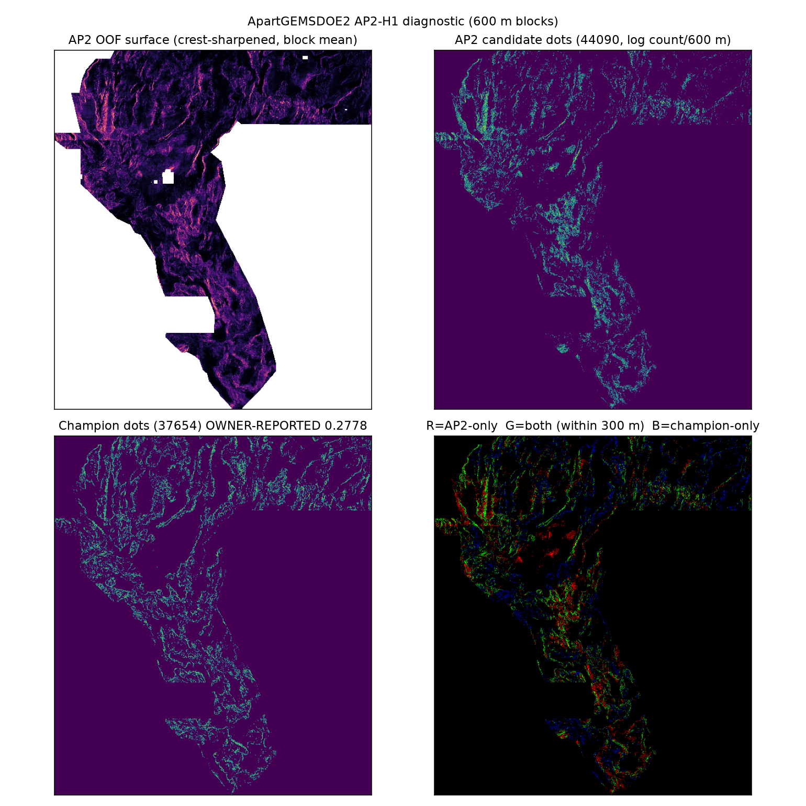

Five ranked hypotheses were written before implementation in the preregistration
(docs/research/ap2-preregistration-20261027.md in the GitHub repo). Lane executed: AP2-H1 CCCB test; final emitted field is EXP1 OOF CTRL because the chain arm lost —
4-quadrant OOF HistGB over the canonical 35-ch stack + 20 hash-pinned external channels, PU-aware LiDAR-gap negative weighting,
chain corroboration, exact 300 m emitter, B=2. AP2-H2 (blind-basin reallocation) and AP2-H3 (dip migration) were deferred to stay in-lane;
AP2-H4 (SGMC-difference) rejected (would invalidate the SGMC evaluator; measured live ≈0.05 when tried solo);
AP2-H5 (raw seismicity) is data-blocked in this sandbox (named official source: USGS ComCat FDSN — egress here is GitHub/PyPI only).
| # | Hypothesis (layers) | Physical signature / transform | Why it targets catalogue-missing faults | Different from prior repo work | Gain / cost · outcome |
|---|---|---|---|---|---|
| 1 | AP2-H1 CCCB — 35-ch stack (19 core bands + LiDAR/radiometric externals) | OOF HistGB posterior × along-axis chain vote (4 axes, ±5 px) on its own top decile; exact emitter; credit-bar budget | Expert mappers trace continuous lineaments; isolated speckles (the champion's measured FP load) are what a mapper would not draw | Chain votes existed only as channels — never a hard gate × OOF posterior with a derived budget | High / medium · tested: chain arm rejected; CTRL field emitted |
| 2 | AP2-H2 Blind-basin reallocation — LiDAR-valid mask, potential fields, SGMC only to measure prevalence | Split the dot budget between LiDAR-valid and gap regimes by measured off-catalogue prevalence (≈1.61× denser in gap) | Pre-LiDAR mapping missed gap-basin faults; area-proportional budgets under-sample them | H45/H48 used a fixed ~30% gap quota; this derives quota from prevalence and changes model class per regime | Medium / medium · deferred (one lane) |
| 3 | AP2-H3 Dip-migrated basement step — depth-to-basement + gravity + RTP | Shift potential-field worm crests basinward by a depth-scaled offset for a ~60° normal fault (≤2 px) | A buried fault's geophysical edge sits updip of its surface trace by 150–300 m — the full kernel width | H32-A/H44-5 used dip only as an additive arm, never standalone, never depth-scaled | Medium / low–medium · deferred (one lane) |
| 4 | AP2-H4 SGMC/Qfaults catalogue-difference — SGMC raster + ≥2 coincident geophysical edges | Emit compiled traces absent from the competition catalogue only where edges corroborate within 300 m | Targets faults in newer state compilations that the competition catalogue lacks | Tried solo upstream (owner-reported ≈0.05); using SGMC as input also invalidates the SGMC evaluator | Low (measured) / low · rejected |
| 5 | AP2-H5 Seismicity-chain lineaments — bands 10/16; raw source if needed: USGS ComCat FDSN (named, not fetchable from this sandbox) | Hough/Radon collinearity of earthquake-density ridges | Blind faults can host microseismicity without a surface scarp | Bands 10/16 solo AUC only 0.55–0.57 upstream; raw-catalogue version is egress-blocked here | Low / high (blocked) · rejected |
55 channels tested alone on withheld holdout positives: worst curv_s2 oriented AUC
0.5840 ≤ 0.90 — PASS. OOF quadrant AUCs: {'NW': 0.69085, 'NE': 0.74986, 'SW': 0.62004, 'SE': 0.69153}.
| Arm | HOLDOUT-DTI v3.0 | SGMC-cal |
|---|---|---|
| Champion-recipe control (D28 parent, visible-only B=2) | 0.099202 | 0.064121 |
| EXP1 CTRL (OOF surface, 37,654) | 0.104588 | 0.057017 |
| EXP2 CHAIN (×chain, gate ≥0.2, 37,654) | 0.103458 | 0.053531 |
| EXP3 credit-bar budget scan on the better field (CTRL): | ||
| 25000 | 0.096802 | 0.049454 |
| 32000 | 0.102695 | 0.054351 |
| 37654 | 0.104588 | 0.057017 |
| 44090 | 0.106043 | 0.058254 |
Negative results (deliverables). (1) The chain gate hurt both metrics — along-strike continuity of a per-pixel
probability ridge at 100 m does not separate faults from Lake Lahontan shorelines/basalt margins in this stack. (2) The first, literal
implementation of the preregistered emitter (min_sep_px=2.8 on the raw field) saturated at 20,223 dots regardless of budget,
and the first champion control was censorship-biased (0.0045). Both bugs, the fixes, and the retained flawed receipts are documented in
docs/research/ap2-pass2-amendment-20261027.md and evidence/ap2_experiments_flawed_v1_minsep.json.
Evaluator verification. The vendored evaluator reproduces upstream GEMSDOE32's published control bit-exactly: D28 with visible-only B=2 → 0.09920232315251679 (22,232 withheld).
What would actually move the score (next sessions). (a) GPU full-footprint Tversky-loss segmentation on the 55-ch stack (impossible here: 2 vCPU / 3.8 GB, verified); (b) label-free physics channels that find different secondary ridges — the binding constraint is uniqueness vs the modern unscored registry, not another GBM on the same ridges; (c) an organiser receipt for one AP2-class file, without which holdout→live transfer above 0.2778 remains uncalibrated.

scripts/build_site.py from evidence/*.json — no hand-typed scores. HOLDOUT-DTI = local evaluator, never a leaderboard score. OWNER-REPORTED = transcribed claims without organiser receipts. PROJECTION = not a score.